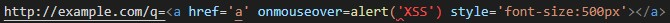
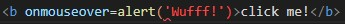
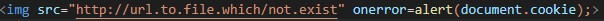
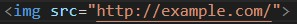
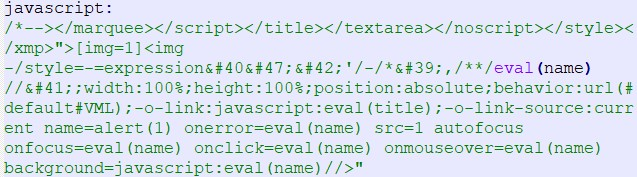

The Rolling Scopes School 2022Q1S2 slides by @tedgregory
Cross-Site Scripting (XSS) attacks are a type of injection, in which malicious scripts are injected into otherwise benign and trusted websites. OWASP
The end user's browser has no way to know that the script should not be trusted, and will execute the script.
Because it thinks the script came from a trusted source, the malicious script can
An XSS vulnerability allowing an attacker to modify a press release or news item could affect a company's
stock price or lessen consumer confidence.
An XSS vulnerability on a pharmaceutical site could allow an
attacker to modify dosage information resulting in an overdose. And so on.
Early on, two primary types of XSS were identified, Stored XSS and Reflected XSS. In 2005,
Amit Klein defined a third type of XSS,
which entitled DOM Based XSS.
Reflected XSS occurs when user input is immediately returned by a web application in an error message, search result, or any other response that includes some or all of the input provided by the user as part of the request, without that data being made safe to render in the browser, and without permanently storing the user provided data.
For example when an attacker stores malicious script in the data sent from a website's search or contact form.
As an example, this code
executed by a user will show a link with alert. Or
'">onmouseover
onerror
Stored XSS generally occurs when user input is stored on the target server, such as in a database, in a message forum, visitor log, comment field, etc. And then a victim retrieves the stored data from the web application without that data being purified. The attack payload can be permanently stored in the victim's browser, such as an HTML5 database, and never being sent to the server at all.
Examples of stored cross-site scripting attacks include the profile fields such as your username or email, which are saved on the server and displayed on your account page.
For example, injecting the following

onto the website with high traffic can cause a DDoS attack
Blind Cross-site Scripting is a form of persistent XSS. It generally occurs when the attacker's payload saved on the server and reflected back to the victim from the backend application.
To increase the success rate of these attacks, hackers will often use polyglots, which are designed to work into many different scenarios, such as in an attribute, as plain text, or in a script tag. Here's a polyglot example 
As defined by Amit Klein,
DOM Based XSS is a form of XSS where the entire tainted data flow from source to sink takes place in the browser.For example, the source (where malicious data is read) could be the URL of the page (e.g., document.location.href), or it could be an element of the HTML, and the sink is a sensitive method call that causes the execution of the malicious data (e.g., document.write).
An example of DOM-based cross-site scripting attack would be when the website changes the language selection from the default one to one provided in the URL.
Attackers leverage a variety of methods to exploit website vulnerabilities. As a result, there is no single strategy to mitigate the risk of a cross-site scripting attack.
The concept of cross-site scripting relies on unsafe user input being directly rendered onto a web page. If user inputs are properly sanitized, cross-site scripting attacks would be impossible. There are multiple ways to ensure that user inputs can not be escaped on your websites.
Web application vulnerability automated tools/scanners can assist in finding XSS flaws. However they can't find all XSS vulnerabilities, hence manual code reviews are important. Manual code reviews won't catch all bugs, but it's the best proven strategy.
Code reviewer needs to closely review.
1. That untrusted data is not transmitted in the same HTTP responses as HTML or JavaScript.
Code reviewer needs to closely review.
2. When data is transmitted from the server to the client, untrusted data must be properly encoded. Do not assume data from the server is safe. Best practice is to always check data.
Code reviewer needs to closely review.
3. When introduced into the DOM, untrusted data MUST be introduced using one of the following APIs:
Code reviewer needs to closely review.
Code reviewer should also be aware of the HTML tags (such as img src,
iframe, bgsound etc.) can be used to transmit malicious JavaScript.
Each variable in a web application needs to be protected. Make sure that all variables go through validation and are then escaped or sanitized is known as perfect injection resistance.
Frameworks make it easy to ensure variables are correctly validated and escaped or sanitised.